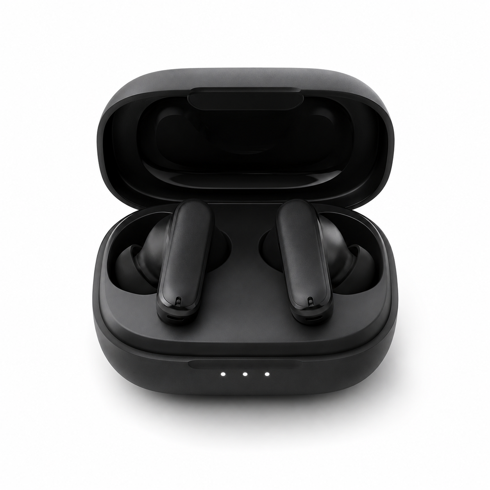

Looking for the best wireless earbuds under $50? We tested and compared the top budget earbuds to help you find the perfect balance of sound quality, battery life, comfort, and value.
Compare the best wireless earbuds under $50 at a glance before reading our detailed reviews.
| Product | Rating | Battery | Bluetooth | Price |
|---|---|---|---|---|
| Soundcore P20i | ⭐ 4.8/5 | 30 Hours | 5.3 | $29.99 |

$29.99
Battery: Up to 30 Hours
Bluetooth: 5.3
Best For: Everyday Listening
Check Price on AmazonThe Soundcore P20i delivers impressive sound quality, long battery life, comfortable fit, and reliable Bluetooth connectivity. It's one of the best budget earbuds available for everyday listening in 2026.
The Soundcore P20i offers surprisingly rich audio for its price. Bass is deep without overpowering the mids, while vocals remain clear and natural. Whether you're listening to music, watching videos, or taking calls, the sound quality easily exceeds expectations for earbuds under $50.
With up to 30 hours of total playtime using the charging case, the Soundcore P20i is ideal for daily use. A single charge provides hours of uninterrupted listening, making it perfect for work, travel, and workouts.
The Soundcore P20i is lightweight and comfortable enough for long listening sessions. It includes multiple ear tip sizes to help you find a secure fit, making it suitable for commuting, workouts, and everyday use.
After comparing dozens of budget wireless earbuds, the Soundcore P20i stands out as one of the best options under $50. It combines impressive sound quality, long battery life, a comfortable fit, and dependable Bluetooth connectivity at an affordable price. If you're looking for outstanding value without spending a fortune, this is an easy recommendation for 2026.
Before buying wireless earbuds, consider these important factors:
Yes. Many budget earbuds now offer excellent sound quality, long battery life, and reliable Bluetooth performance without spending over $50.
Yes. Its lightweight design and secure fit make it suitable for gym sessions, walking, and daily activities.
The Soundcore P20i provides up to 30 hours of total battery life with the charging case, making it ideal for everyday use.
Yes. Bluetooth 5.3 offers a stable connection, faster pairing, and improved power efficiency.
This article contains affiliate links. If you purchase a product through these links, SmartPickHub may earn a small commission at no extra cost to you. We only recommend products we genuinely believe provide great value.
If you're looking for the best wireless earbuds under $50, the Soundcore P20i is one of the strongest choices in 2026. It combines excellent sound quality, long battery life, a comfortable fit, and reliable performance at an affordable price, making it an outstanding value for everyday users.